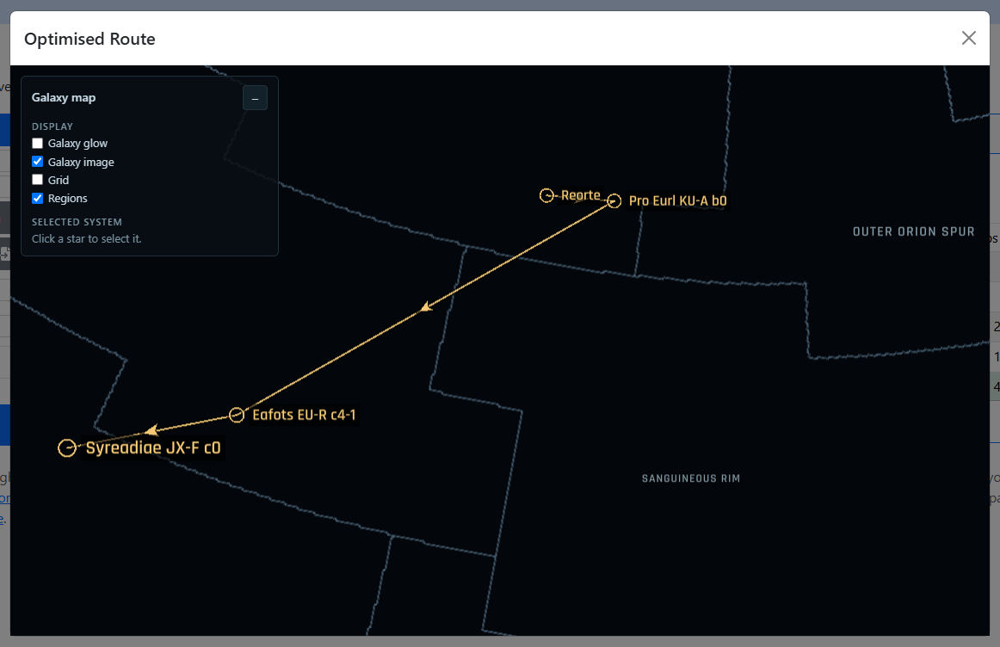
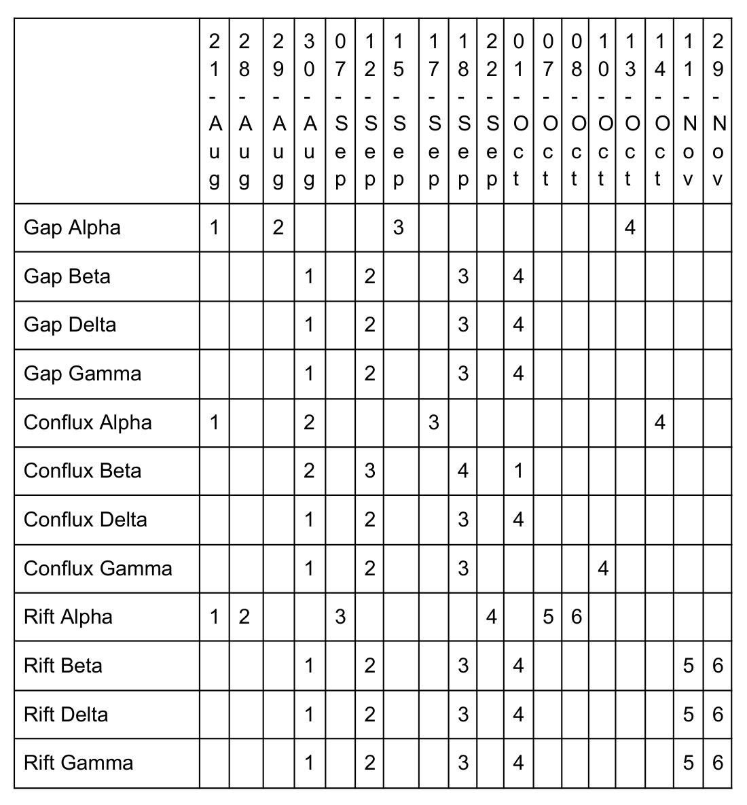

"My last request is that you always... remember." – CMDR Salomé, 30 JUL 3303
There are very few mysteries that stand the test of time, and even fewer that pass into legend among the pilots of the galaxy. In our realm, the greatest of them all is the location of Raxxla. Every commander dreams of being the one who finds it, though I would wager that only a select few have ever made a serious effort to do so.
There are other mysteries out in the black, though none quite as notorious as Raxxla. A few of them, however, never quite feel complete. The mystery of Project Dynasty is one of those. In fact, the accepted ending is so unsatisfying that some commanders feel only the surface has been scratched.
I am, obviously, one of those commanders who find the resolution unsatisfactory. Perhaps that is because I only earned my wings three years after the mystery was "solved." I think, though, that it has more to do with what the historical record says Project Dynasty was meant to accomplish. This paper will look at what is out there, along with a theory of what I believe the clues point to: a more conclusive ending to the mystery.
A caution for you, the reader, before we begin: this theory by no means promises definitive answers. It is entirely my own interpretation of the available clues, intended to point commanders who wish to search in a direction that has not been tried before. At least, I have not found another investigation that approaches the mystery from this direction. In the end, I hope it at least entertains those who also feel that the mystery was never completely solved.
A Brief History of Project Dynasty
"Take a line from Reorte to Riedquat... and keep going..." – words spoken to Lady Kahina Loren, as recorded in Reclamation by Drew Wagar
According to the currently accepted account, Project Dynasty was a doomsday plan, conceived and undertaken by a group known as "the Club" after the First Thargoid War. Its objective was to find places for humans to retreat to if the Thargoids ever invaded human space again. It involved sending ships to three regions relatively near the human bubble. That is the short version of what happened.
The reality is much more sinister. After the First Thargoid War, the Club sought to erase all knowledge of the Thargoids from human memory, while secretly working to prepare humanity's leadership and military for their eventual return. At some point before 3270, they conceived of, and began to implement, a contingency plan in case their war preparations failed. One might question the wisdom, or the good intentions, of this decision: if they truly wanted humanity to survive another attack, why would they try so hard to erase all knowledge of the threat it faced?
Project Dynasty was a massive undertaking. Depending on the source you read, the mission consisted of at least 12 Anacondas and one megaship, the Zurara, and may have comprised many more vessels.
According to the logs, the mission, as it was conveyed to those who took part, was to last one year. It was set to begin in the Reorte system and travel to three regional "safe areas" within the Milky Way: the Formidine Rift (the best known, thanks to the writings of Drew Wagar), Hawkin's Gap (spelled as it appears in the logs), and the Scutum-Sagittarii Conflux. The mission was so secretive that even the crews did not know their objective until they reached the mission sites. Once there, they were to place beacons around Earth-like worlds and, in the case of the Formidine Rift, seed terraformable planets with terraforming materials.
Upon completing this mission, they were supposed to return home. At least, that is what they thought. The Club had other plans, which included ensuring that only it knew about these locations. To that end, the Club planted saboteurs aboard the ships to make sure none of them came home.
A New Theory
I have been studying this mystery for almost seven years. In that time, I have seen many assumptions acted upon that, frankly, do not take all of the evidence into account. I made some of those common mistakes myself when I wrote my initial theory six years ago.1 That said, I want to get back to basics and look at what is actually there.
Before we do, though, I want to make one thing clear: I am not claiming that there are Project Dynasty assets out in the black that remain undiscovered. I am claiming that it is possible.
The main sources I will start with are the transcripts from the known ground sites2 and a fairly recent archive broadcast recorded by Canonn researcher Drew Wagar on 06 FEB 33103, both listed in the notes.
The Problematic Issue
The biggest problem with claiming that everything relating to Project Dynasty has been found is that there is a large gap between what has been found and what is described. The logs and the historical record describe three fleets of Anacondas traveling into deep space, dropping beacons around Earth-like worlds, and then being stranded there by sabotage. What has actually been found is four ground sites per region, plus the Zurara.
This leaves many who have explored the mystery questioning either the completeness of the official records or whether everything has truly been found. Those who have grown cynical after years of official secrecy and half-truths usually blame the records, while those who believe there is still more to find argue the latter.
My personal belief (not the proposition of this paper) is that there is a significantly greater than zero percent chance that assets remain to be found. Even if one claims that all of the ships were destroyed, which contradicts the logs, where are the beacons? Staying with the argument from observation, we cannot even say that everything has been searched, because less than 0.07% of the galaxy has been explored! Finally, I keep finding new evidence, such as the broadcast mentioned above, which suggests that there may be more to find. If you want to hear it from Drew himself, listen to what he says between 7:30 and 7:40 of the broadcast: he states that the mission included three megaships, which contradicts the commonly cited account of Project Dynasty in the galactic archives.
The Timeline of the Mission
The first point that needs to be clarified is the timeline of the mission. Almost every theory I have read has tried to fit the entire Project Dynasty mission into the dates given in the logs. Some believe that each ship departed on the first date of its own logs. Others have stated that each regional mission began on the first log date within its regional group. Another group, to which my first theory belonged, believed that each ship began its deployment mission on the first date recorded for that particular ship.
This theory takes a different approach to the mission timeline. I want the evidence to tell its own story.
Three mission logs give us some evidence of how long the mission was from the crews' perspective. Formidine Rift Gamma Mission log 1/6 states: "These long range missions pay well, but it's a year out in the void. A year!" This gives us our first reference point for the length of the mission. The following log, Formidine Rift Gamma Mission log 2/6, states: "Finally arrived in place after five months of hyperspace travel. Now we have two months of laying a bunch of beacons before another five months of travel home." Conflux Gamma Mission log 3/4 supports this five-month outbound timeline: "So, we're here now. Took us five months to reach this part of the galaxy."
These logs give us the most basic outline of the mission timeline: one year in total, broken into five months of outbound travel, two months of beacon deployment, and five months of return travel. With this in mind, there are three objections to this timeline that I want to address.
1) Formidine Rift Alpha Mission log 3/6 contradicts this timeline.
At first glance, this seems like a logical argument. The log claims that they have been traveling for "almost six months." I would note that an estimate like that is relative and can change meaning depending on your point of view. My original theory was published on 01 MAR 3307, and as I write this, it is 02 NOV 3312, yet I stated above that I have been working on this mystery for almost seven years. Seen that way, numbers like these describe the perceived passage of time, not the mathematical truth of the dates.
An additional point about this log is that the writer states: "Three more months before we can turn and head back." There are many possible explanations for this, but I think the most obvious one, based on the date range of the logs, is that the Formidine Rift fleet had a different mission from the Conflux and Gap fleets. It not only had to deploy beacons but also had to deploy terraforming supplies.
2) Drew says in the broadcast that the mission ran from 3269 to 3271.
This argument is also easy to explain. Drew is describing the start of the mission from the Club's point of view: that is when the Club ordered the ships, which Faulcon DeLacy built and delivered to the starting point. The writer of the Gamma mission logs is describing the mission from their own point of view, which begins when the ships left that starting point.
3) The timeline you propose doesn't line up with the log dates.
I agree, it doesn't, but that is okay. When you read the logs carefully, you notice a trend: the wording of the logs is a separate clue from their dates. Only in a few specific situations can we say that an event happened on a particular day, because the logs support that reading.
The key takeaways for our theory are that, first, the trip out to the mission sites took five months, and second, the beacon deployment missions in the Conflux and Gap regions lasted two months, while the Rift missions lasted three. These durations provide the operational framework for the calculations that follow. They are not intended to establish the precise dates or locations of every stage of the expeditions, which must instead be determined by examining the individual logs and their contents.
The Mission Route
The second most important part of working out where to look for any remaining traces of Project Dynasty is knowing what route the fleets took. If we can calculate a route, we can begin to work out where to start looking. In my opinion, a reasonable waypoint-based route can be plotted from the logs.
The Point of Origin
This is fairly easy to find. In Formidine Rift Alpha Mission log 3/6, the writer gives us a double clue. One part of it is fairly redundant by the time we find it, but it echoes what Rebecca (presumably) told Kahina about how to reach the Formidine Rift. The writer begins by saying that the starting point is Riedquat, but then corrects it to Reorte. This acknowledges the line from Reorte to Riedquat described in Reclamation, while also confirming the writer's memory of the true starting point.
On the practical side, Riedquat is less than four light-years from Reorte, so the difference has minimal impact on the distances or travel speeds of the fleets. Another point to consider is that Faulcon DeLacy's headquarters is in Reorte, and a large fleet in that system would attract far less attention than it would in the anarchy system of Riedquat.
The First Leg
The flight path the fleets took is one of the most contentious points in the theorizing about where to look for hidden Project Dynasty assets. This is where most theories begin to diverge from the one I am proposing, and I believe that getting this point right is one of the most crucial steps in working out where to look. Most theorists believe that the regional fleets left Reorte and headed directly to their regional mission zones. I believe the logs tell us that they left Reorte and set course for a point where the three fleets went their separate ways.
I believe that Hawkin's Gap Delta Mission logs 1/4 and 2/4, along with Hawkin's Gap Beta Mission log 2/4, can help us here. In Hawkin's Gap Delta Mission log 1/4, the writer notes: "This is a bigger operation than I thought it was. A massive fleet of Anacondas all prepped for long endurance travel out to the edge of beyond." On its own, I acknowledge, this could simply describe the common starting point, and all of the ships could have set course directly for their ground sites. But let me finish before I answer that argument.
Delta Mission log 2/4 states: "Judging by the way the fleet deployed I would say there were three main destinations, all a long way outside of the core worlds. We got our orders today, we're making for a zone called 'Hawkin's Gap'. It's a seriously long way, not even the explorers have been out this way before. Strange mission."
Pair that log with Beta Mission log 2/4, which says: "Big bust up today. Apparently this ship is flying without shields and without guns! We had an escort for the first few hundred light years, but then they peeled off and we're on our own out here in the void! If we do come across anything nasty we're going to have to hope we can run..."
Using this information and a few details from the historical record, we can deduce several things:
We know that the ships were all together at Reorte. A large fleet of ships in the same system as the manufacturer's headquarters would not draw much attention, much like a row of Mustangs outside an old Earth Ford factory.
If secrecy was the most important part of the mission at this stage, it would make more sense to send all of the fleets out together as one group, especially since they were escorted by armed ships that later broke away. Three fleets with armed escorts heading in three different directions would draw more attention than one fleet heading out, even one as large as Drew describes, with three megaships and at least 12 Anacondas (one megaship and four Anacondas per region).
Returning to the question of secrecy, it makes sense to travel in one direction rather than three at this stage. The tactical advantage is that it is harder to judge where the ships are going if they leave together rather than splitting up immediately. Even if the trip had not been secret, pirates love unarmed, unshielded ships.
Based on the logs and the points above, the most logical choice is for the ships to have traveled as one group to a nearby point and then continued to their regional locations.
The Second Leg
From this separation point, the ships would have traveled on to their regional ground sites. However, these ground sites cannot have been their initial mission points. Several pieces of evidence support this:
These missions appear to have been planned with military precision. The secrecy and the coordination all point to a high level of planning, which would have ensured that everything happened concurrently.
All of the fleets had to be traveling at the same speed to reach the separation point at the same time. The evidence in Conflux Gamma Mission log 2/4 and Conflux Delta Mission log 2/4 shows that the ships traveled at a high rate of speed for the entire trip.
We know that the Formidine Rift locations were on the far side of the Poseidal Wall. Given the Zurara's position, if the Formidine fleet arrived at the Formidine Rift ground sites on 21 AUG, as the logs seem to indicate, it could not have reached its first drop points on the far side of the Poseidal Wall within nine days (the date of the next log entry) at the speed the ships would have needed to reach the regional ground sites in the first place. I will explain this further below, but given the limitations of the drives available to them, it would not have been feasible for the Zurara to cover the approximate straight-line distance of ~4,000 ly to its mission site within that nine-day window.
Based on Conflux Alpha Mission log 4/4 and Hawkin's Gap Gamma Mission log 1/4, we can reasonably deduce that the ships changed course at some point, because traveling in a straight line from any proposed shared separation point past their regional ground sites would not point them toward the core, but rather further out into an adjoining arm of the Milky Way.
If you accept this deduction, the most reasonable interpretation is that the ground sites served some purpose other than marking where the fleets dropped their beacons, and that the fleets turned toward their initial mission points at, or very near, their regional ground sites.
The Final Leg
The final leg is the distance the Project Dynasty vessels traveled from their regional ground sites to their mission points. This is the part that I have found most theories omit or underestimate. With it, we can begin developing our mathematical route, after one last consideration.
The only region that offers enough information to begin plotting this hypothetical initial mission point is the Formidine Rift, because we know the final location of the Zurara. The catch is that we do not know where the mission insertion point itself is.
However, we can develop some calculated theories based on the dates of the logs from Hawkin's Gap, the Conflux, and the Zurara itself. The first log date is 21 AUG. We can reasonably assume that this is when the fleets arrived at their initial mission points, because only the Alpha missions from each regional group record this date. The final dates we find from the two groups are 10 OCT, 13 OCT and 14 OCT. Given that the mission was to last two months, or 60 days, this equates to a time span of somewhere between 50 and 54 days, with a final mission end date of approximately 20 OCT.
However, we do not yet have our final travel time. In the broadcast mentioned above, Drew says:
"With the technology available at the time, such an undertaking was enormously expensive and carried massive risks. No vessels had previously ventured that far because hyperdrive systems could not be repaired without docking facilities. Furthermore, the hyperdrive technology of the era was prone to failure without regular servicing."
This constraint meant that the ships would have needed time before and after deploying the mission beacons to carry out repairs. This would have been most important at the start, to ensure that the ships could cope with separating to conduct their individual missions, but it would also have been necessary after a long period apart. Given the gaps at the beginning and end of the mission, we can estimate that about five to eight days were set aside for maintenance. This would mean that the last date listed in each region was the estimated date on which those ships returned to the initial mission point.
The travel time back to that point can then be estimated from the next-latest date the regions give us: 01 OCT. This would mean that, as the Zurara's logs state, deployment operations ended on 01 OCT and the ships turned back toward their initial mission points. Counting the days from 01 OCT to each of the three final dates (9, 12 and 13) and averaging them, we get a little over 11 days of travel back to the initial points. We now have enough data to create a mathematical straight-line model of the fleets' travel path.
The Mathematical Model
Before we begin, it is important to note that this section builds a baseline straight-line model of the route to the Zurara. All it will give us are locations around which to look for target systems, and a minimum distance the ships would have traveled if they could make each leg in a single jump. It will not give us enough data to define possible search areas. To do that, the waypoints must be entered into a route-plotting tool, such as Spansh.
The second thing I want to mention is that I am only publishing the results of the calculations in this section. For an explanation of the mathematics used, see Appendix B. All of the coordinates are listed in Appendix A.
Before we start on the mathematics, let's review the evidence we have. Since we are now nine years past the "culmination" of the mystery, we can confidently say that we have the names and coordinates of all the relevant systems: Reorte, the Zurara, the ground sites in the Formidine Rift, Hawkin's Gap and the Scutum-Sagittarii Conflux, and Sagittarius A*. From our previous analysis, we can also assume the following:
The fleets traveled at a similar speed.
They most likely traveled first to a central dispersal point, where their escorts turned back toward the Bubble.
They most likely traveled on to their regional ground sites, where they changed course.
They then traveled beyond their regional ground sites to a rally point, where they probably carried out maintenance before beginning their beacon deployment missions.
To create a mathematical route, at least one more point is needed: the point in space where the fleets broke up and headed for their regional sites. Finding that point is a two-part process. First, the central point between all of the ground sites in each region is calculated. Then, the point closest to Reorte at which the fleets could have separated is calculated. In mathematical terms, the first of these is called a centroid. The second is derived from a circumcenter: it is the point, equidistant from all three regional centroids, that lies closest to Reorte.
If you wish to calculate these yourself, the formulas and an explanation of how to use them are included in Appendix B.
Calculating these points for this theory produced the data in the following table. Remember, these are mathematically computed points, not the coordinates of specific star systems or planets.
Point
X
Y
Z
Formidine Rift centroid
-5803.3515625
130.37109375
-5974.21875
Hawkin's Gap centroid
7888.7265625
133.875
7507.0390625
Conflux centroid
-3191.2578125
70.7578125
8593.1328125
Circumcenter (O)
1580.975073
137.671648
219.703384
Selected dispersal point closest to Reorte (P)
1581.401
55.861
219.292
Charting a route from Reorte to the selected dispersal point works out to 1,512.55 ly. From the dispersal point to the Formidine Rift centroid is 9,638.45 ly. The final leg, from the Formidine Rift centroid to the Zurara, works out to 4,004.55 ly. The total distance is 15,155.55 ly. We can also calculate another figure that we will need for perspective later: the average speed of the ships over five months, which comes to approximately 100 ly per day, depending on how many days are used. At this stage, the average matters more than the exact figure.
The resulting route looks like this:

Plotted route from Reorte, through the selected dispersal point and the Formidine Rift centroid (Eafots EU-R c4-1), to Syreadiae JX-F c0, home of the Zurara.
The Next Step: Converting Data into a Usable Tool
So far, this theory has given us several things, but it has not yet given us a search zone. A few more factors need to be considered before a possible search zone can be established:
A theoretical ship loadout for the Anacondas.
An examination of the log dates to determine the range of the search area.
Entering it all into a route-plotting tool to help us narrow down the starting points.
With that list in hand, let's start checking items off.
A Theoretical Fleet Loadout
As before, I am not stating that what is in this section is rooted in the historical record, nor am I claiming that this is how the ships were actually fitted out. The points examined here are drawn from the historical record, the logs, and what is possible with modern ship outfitting. First, let's look at what the fleet was likely to consist of.
We have already noted that Drew mentioned in his broadcast that three megaships were involved in the Project Dynasty fleets. We can assume that each region had a megaship and that the Zurara was the one assigned to the Formidine Rift mission. The others have not been found yet, either because they were completely destroyed by the sabotage or because the areas they are in have not yet been searched. Both explanations remain plausible at this point.
The inclusion of these megaships is an oddity, considering that this was supposed to be a clandestine mission. They do not seem to make much sense unless you consider one key fact: the hyperdrives of the time needed a significant amount of maintenance. Hyperdrives had to be serviced frequently at locations with docking facilities, along with regular maintenance during operations, to prevent failure. While the maximum time between repairs requiring docking facilities is not known, it can reasonably be assumed that the megaships, being kilometers long, were large enough to provide these services. This expectation becomes even more reasonable when you consider that, according to the historical record, the Club had these three megaships built specifically for this mission.
We also know that the workhorse of the fleets was the Anaconda. Not only is that ship type specifically mentioned in the logs as part of the fleet, but it is also the ship most commonly associated with Project Dynasty. In fact, it is most likely the ship type referred to as a "support ship" in Formidine Rift Delta Mission logs 4/6 and 6/6.
Speaking of those logs, Formidine Rift Delta Mission log 3/6 tells us that there were at least two Sidewinders on the Delta mission. This does not, on its own, prove that they were part of every mission. Logically, though, it makes sense for every mission to have had them as a force multiplier. If the Anacondas carried the beacons and the Sidewinders deployed them, each mission could deploy at least two or three beacons at every stop.
Given this, we have a theoretical fleet of at least one megaship, four Anacondas and eight Sidewinders per region. We know that the fleet was commissioned in 3270 and therefore most likely used the Type 2b hyperdrive, also known as the "Cloud" drive.4 We also know that the fleet had to cross the Poseidal Wall, which requires a jump range of 35–40 light-years with modern drives to cross without using FSD injections (also known as jumponium).
While researching this section, I found that Drew's hyperspace research page (see note 4) very closely mirrors the material in an archived First Encounters-era pilot's handbook.5 According to that handbook, the Sidewinder was capable of a maximum jump range of 81.81 ly when fitted with a Class 3 Type 2b hyperdrive. The Anaconda, however, was capable of only 18.37 ly per jump with the largest drive available to it, a Class 7 Type 2b. Both ships were capable of using fuel scoops.
This creates a problem for our theory. If the Anaconda could not achieve the jump range needed, even with the most powerful hyperdrive available, then it would not have been a viable ship for this mission. There are, however, a few possible explanations:
There is a crossing of the Poseidal Wall that would allow an Anaconda with a Type 2b drive to cross the gap. This is unlikely, but it cannot be disproved, as the region has not been completely mapped.
The archived specifications are unreliable. The handbook has never been accepted as an authoritative record, and the Anacondas may have performed better than recorded, perhaps because the Club kept the true performance of its modified ships off the books. I do not believe this, however, because of a recent exchange I had with Drew6 about Luko's ship. He confirmed that Luko's ship was capable of jumps of 25–30 ly, which fits the handbook's specification for a Cobra Mk III with a Class 3 Type 2b drive (27 ly per jump).
On Drew's hyperspace research page, captured by Canonn before Drew took it down, the last paragraph of the section on the Cloud (Type 2b) drive mentions the Highliner Antares, which had "a prototype fast hyperspace drive." Although it is not explained exactly what this was, it is quite possible that this new hyperdrive was used to outfit the Project Dynasty ships. The drive was developed by Sirius Corporation, which is specifically mentioned in Hawkin's Gap Beta Mission log 1/4 as a possible contributor to the mission. It is possible that this reference was left in the record deliberately, as a clue to how the Anacondas were able to meet the jump requirements.
Because of these limitations, I am going to focus only on the Anaconda's loadout. The other two ship types should easily have been able to accomplish what Project Dynasty set out to do. I am also going to make some assumptions, some of which are not supported anywhere in the historical record or the logs, but which make sense in light of the evidence.
For the reasons given above, I believe the Anacondas used Antares drives. To simulate this when I built the ship in the EDSY outfitting tool, I used a Class 6A FSD with grade 2 Increased Range engineering and the Mass Manager experimental effect. Combined with the rest of the loadout, this gave the ship a jump range of 35–38 ly.
These ships would have needed to operate 24 hours a day, as shown by Conflux Delta Mission log 2/4. As such, I believe the ships ran three shifts.
The flight crew of a modern Anaconda is four, but it was ten in the First Encounters era. My prediction is that they used a hybrid arrangement of about eight per shift: four flight crew and four maintenance crew.
The cargo crew was separate from the flight crew (Hawkin's Gap Alpha Mission log 2/4), and the flight crew seemed to be afraid of them (Hawkin's Gap Beta Mission log 3/4 and Hawkin's Gap Gamma Mission log 4/4). I estimate that they also worked three shifts, with ten people per shift.
The logs of the various missions mention a Captain. In one of them, the Captain goes missing for a time (Hawkin's Gap Beta Mission log 3/4). This would not be much of an issue if there were an Executive Officer (XO) on board to take over the Captain's responsibilities. As such, I have estimated a command crew of two.
I also estimate that the ships carried two specialized EVA workers to fly the Sidewinders. While the Anacondas did not necessarily have to carry the Sidewinders, it makes sense that either the megaship or the Anacondas carried them, as the Sidewinder has a crew of one, which does not allow for a three-shift workload. As the Anacondas are described as support craft, I felt it appropriate that they carried the Sidewinders.
This brings the estimated crew complement to around 58. To accommodate them, I fitted the Anacondas with one size 6 passenger cabin and three size 4 passenger cabins.
To simulate the carrier mechanisms that would hold the Sidewinders, I fitted the Anacondas with two size 6F Large Planetary Vehicle Hangars and one size 2F Large Planetary Vehicle Hangar. Combined, these account for the approximately 30-ton Sidewinders and the mechanisms needed to launch and recover them.
The Anacondas carried beacons to mark the Earth-like worlds (ELWs). Nothing in the logs says how much they weighed, so I used some artistic license to estimate their weight. I looked up the James Webb Space Telescope of 21st-century Earth, which weighed approximately 6.5 tons. To accommodate this, I included two Class 5E cargo racks.
The galactic archives note that the ships carried the latest (at the time) Auto Field-Maintenance Units. To simulate this, I equipped the Anaconda in EDSY with a Class 2A AFMU.
Hawkin's Gap Beta Mission log 2/4 notes that the ships were flying without shields or guns, and Conflux Gamma Mission log 1/4 says that the ships were stripped right down. While my loadout does not meet that description perfectly, it is, in effect, just cargo space and jump range, with no shields or weapons. I also used D-rated modules wherever possible to achieve a stripped-down build while retaining the required 35–38 ly jump range.
Given these specifications, I created a theoretical ship that meets the requirements above. Appendix C contains the EDSY output for the simulated Anaconda that I used in Spansh. The first page shows the readable loadout, and the second contains the SLEF file.
An Examination of the Log Dates
There is one last calculation to make, and it is based on the dates of the logs found at the ground sites. We know from the Zurara's logs that its final resting place was not the fleet's initial point or rally point. The logs specifically state that the Zurara had just completed its mission and was turning around to head back to the mission rally point. To truly find the region of space that needs to be searched for any remaining Project Dynasty assets, that rally point needs to be calculated.
The first step is to go back to the logs, this time focusing specifically on their dates. Appendix E contains a chart of the logs arranged by the date on which each was recorded. Many separate conclusions could be drawn from that data; however, for the purposes of this paper, we are looking to make only one specific deduction: the estimated location of the Formidine Rift rally point.

Log numbers recorded by each of the twelve regional missions, arranged by date. See also the full table in Appendix E.
To do this, we will look specifically at the following dates: 21 AUG, 30 AUG, 01 OCT, 13 OCT and 20 OCT. I realize that 20 OCT is not a log date. However, if you take the timeline referenced above as the full mission timeline, 13 OCT falls a full week short of the end of the two months mentioned in the logs. The Formidine Rift mission logs do extend to the end of November, but this is addressed in the following assumptions based on the log dates:
The Alpha missions were the regional fleet commanders. This assumption is reasonable because only the missions labeled Alpha report on 21 AUG, and all of the Alpha missions report on that date.
30 AUG was the first beacon deployment date. This assumption is based on the fact that all missions reported on or around 30 AUG, with only two, Rift Alpha (28 AUG) and Gap Alpha (29 AUG), not reporting on that exact date.
01 OCT was the final beacon mission date. This assumption is based on several data points:
Most of the missions in the Gap and the Conflux have this as their final log date, and all of the Zurara's logs are dated 01 OCT.
The Zurara's logs also state that it had just finished its mission and was turning around when the ship was sabotaged.
While the Zurara was part of the Formidine Rift mission, it can also be argued that its logs were left as a key to what may be found in the Gap and the Conflux. The date of 01 OCT is therefore another clue for searching those regions, as the Zurara was the great revelation of the Formidine Rift.
The fleets were meant to return to their initial point/rally point (IP/RP) on or around 12 OCT. I believe this can be assumed because the only three logs dated after 01 OCT come from the Gap and Conflux missions, and all of them belong to missions that completed their objectives. If we average the time between their final beacon drops on 01 OCT and their final log dates, we find that 11.33 days elapse. Adding this to 01 OCT gives approximately 12 OCT.
The fleets were supposed to carry out eight days of maintenance at each end of the mission. If we accept a full mission time of 60 days starting on 21 AUG, the final mission day was predicted to be 20 OCT. Subtracting our 12 OCT date from that final mission date leaves eight days waiting at the RP before the fleets were to begin their journey home. This assumption becomes much more reasonable if you accept the theory proposed above about the role of the megaships, and consider that the Anacondas would have needed to operate away from the megaships for an extended period.
With this set of assumptions, assumption 4 gives us the specific information we need to begin locating the IP/RP from the data we have: the IP/RP is 11.33 days' travel from the Zurara, back along the route to its final location. That point is approximately 1,145 ly from the Zurara and 2,859 ly from the Rift centroid. If applied to all three regions of space, this 1,145 ly distance defines the search area in which I believe additional Project Dynasty assets could be found.
Final Warnings
All of the above information is theoretical and based on mathematics, not on actual flight testing. I want my readers to understand that before I continue. I am not saying that these calculations point to the exact region of space where assets will be found. At this point, it is all mathematical theory.
In fact, the theory is written to provide a model that can be proved or disproved. There are other considerations we must account for before we declare "here be dragons," one of which is the actual stellar geography of the galaxy. Appendix D gives a possible route that the ships could have taken, as charted in Spansh. However, the only true way to find the initial mission point in each region, and to prove the theory in this paper, is to actually fly the route.
In fact, that is the only true way to test any of this theory. Over the next couple of months, I intend to fly back to Reorte and fly the route to the Zurara in a ship built to a 30–35 ly jump range to test two things: the actual distance flown, and where along that route the IP lies. I will also test whether it is necessary to cross the Heisenberg Bridge or whether a more direct route is possible. Finally, I will look at the distances between stars on the final legs to see whether a ship with the era-specification maximum range for an Anaconda could have made the trip.
Only then can the recorded distances be applied more accurately to the Hawkin's Gap and Scutum-Sagittarii Conflux regions, and a detailed search region be established. I estimate that this next phase will take me several months to complete, given the time I can spare alongside my other commitments.
The calculated distances in this section should not be interpreted as exact navigation instructions or as the definitive locations of the regional insertion/rally points. The five-month travel period described in the logs does not establish an exact number of days, so the average daily travel distance is an estimate rather than a known value. Furthermore, the mathematical route is a straight-line geometric model and does not account for the actual distribution of stars or navigational obstacles in the galaxy.
The practical route reconstruction in Appendix D demonstrates that the mathematically derived distance is insufficient to reach the likely insertion-point boxel. The calculated distance should therefore be treated as a baseline for further investigation, not as a search radius or a destination. The actual search region must be established through practical route reconstruction and flight testing.
Conclusion
The purpose of this paper was to present a logical and reasonable argument against the search methods previously used to look for Project Dynasty assets. It was also intended to take a detailed look at the historical record and the logs in order to establish a mathematical theory for determining a new search region for any assets that may remain. I believe that this paper has done that.
I will be testing this theory myself. I will test the drive range requirements and, on the final leg, chart paths as the original Rifters did: picking a point in the distance and eyeballing the route as best I can. I will not have the "advanced region intelligence" that the original Project Dynasty commanders had when they set out, so I may, and probably will, make mistakes. When I have completed my testing, I intend to write another paper detailing my findings. I invite others to test it as well. As I have said, I can and do make mistakes; however, I believe the theory is solid and that it fulfills many, if not all, of the requirements placed on it by the historical record. As such, I believe this theory can bring us one step closer to finding any assets that may still lie undiscovered in the Project Dynasty mystery.
This exchange can be found in the comments on Drew's broadcast (note 3).
Appendix A: Coordinates Used for Calculations
Location
System Name
X
Y
Z
Reorte
Reorte
75.75
48.75
75.15625
Formidine Rift Sites
Alpha
Eafots EU-R c4-1
-5805.78125
129.875
-5969.875
Beta
Eafots LZ-H b10-0
-5800.84375
115.59375
-5961.1875
Delta
Eafots GL-Y e2
-5805.5625
151.8125
-6022.09375
Gamma
Eafots RA-G
-5801.21875
124.203125
-5943.71875
Hawkin's Gap Sites
Alpha
Plaa Aec IZ-N c20-1
7890.46875
137.3125
7508.03125
Beta
Plaa Aec XZ-Z b41-0
7892.71875
127.9375
7515.8125
Delta
Plaa Aec RY-B b41-1
7881.59375
135.4375
7500.6875
Gamma
Plaa Aec TT-B b41-3
7890.125
134.8125
7503.625
Conflux Sites
Alpha
Pru Aescs TY-J a64-1
-3187.9375
63
8592.15625
Beta
Pru Aescs HW-S b31-2
-3192.90625
68.40625
8592.75
Delta
Pru Aescs NC-M d7-192
-3183.53125
73.59375
8595.65625
Gamma
Pru Aescs OI-K a64-0
-3200.65625
78.03125
8591.96875
Other
Zurara
Syreadiae JX-F c0-1
-9529.4375
-64.5
-7428.4375
Sagittarius A*
Sagittarius A*
25.1875
-20.90625
25899.96875
Computed Data
Point
X
Y
Z
Formidine Rift centroid
-5803.3515625
130.37109375
-5974.21875
Hawkin's Gap centroid
7888.7265625
133.875
7507.0390625
Conflux centroid
-3191.2578125
70.7578125
8593.1328125
Circumcenter (O)
1580.975073
137.671648
219.703384
Selected dispersal point closest to Reorte (P)
1581.401
55.861
219.292
Appendix B: Mathematical Formulas
Centroids
The first question on readers' minds is probably: what is a centroid? In 3D geometry, a centroid is the mathematical center point of three or more points in space. It is calculated by averaging the x values, the y values and the z values of those points.
Centroid calculation: Because each region contains four ground sites, the geometric centroid of the four sites can be calculated by averaging their Cartesian coordinates independently along each axis:
where (x1, y1, z1) through (x4, y4, z4) represent the galactic coordinates of the four ground sites.
Using this formula, the centroid of each regional area was calculated.
The next obvious question is: why use the centroids as the starting point for the calculations? Why not use a particular surface site in each region?
The answer comes down to reasonable accuracy. The logs do not indicate which ground site we should start our calculations from. Should the command-and-control site be used, so that the fleets could pick up additional data for their mission? Perhaps the agricultural site, so that they could restock their food stores en route? The habitation site, to pick up specialized crew? Or perhaps all of the sites, for all of these reasons?
The fact is that none of these can be determined accurately from the content of the logs. However, we can reasonably conclude that the fleets passed relatively close to these ground sites before turning toward their mission zones. The Formidine Rift and Zurara missions give us an example of the Club's planning: a common departure; a split into groups heading for different regions; a change of direction, so that any survivors could not find the mission sites simply by following the direction the other groups took when they split; and arrival at the mission point.
The logs from the Gap and Conflux missions imply that a turn was made there as well. Without any indication of which ground site they made their course correction from, the most accurate option for the calculations in this paper was to use the centroid of each regional area as the starting point.
Calculating the Circumcenter and the Selected Equidistance Point
The next calculation establishes a theoretical point in space that is equidistant from the three regional centroids. It involves two separate steps: first, finding the circumcenter of the triangle formed by the three centroids; and second, identifying the point on the perpendicular line through that circumcenter that is closest to Reorte.
These two points are related, but they are not the same.
Finding the circumcenter
For this calculation, the three regional centroids are represented by the following vectors:
F = Formidine Rift centroid
C = Scutum-Sagittarii Conflux centroid
H = Hawkin's Gap centroid
Using the full-precision coordinates established in the preceding section, the vectors from the Formidine Rift centroid to the other two regional centroids are calculated as follows:
a = C − F = (2612.094, −59.613, 14567.352)
b = H − F = (13692.078, 3.504, 13481.258)
The circumcenter is the point within the plane formed by the three centroids that is equidistant from all three. To calculate it, the circumcenter O can be expressed as a point within that plane:
O = F + αa + βb
In this expression, α and β are coefficients that determine the circumcenter's position within the plane. They can be calculated by solving the following two equations, which enforce an equal distance from the circumcenter to each of the three regional centroids:
2α(a · a) + 2β(a · b) = a · a
2α(a · b) + 2β(b · b) = b · b
The symbol · represents the dot product of two vectors. Solving these equations using the centroid coordinates above produces the following approximate coefficients:
α ≈ −0.0897593
β ≈ 0.5564376
Substituting these values into the circumcenter equation produces the following point:
Circumcenter O: X = 1580.975, Y = 137.672, Z = 219.703
The circumcenter is approximately 9,638.102 light-years from each of the three regional centroids, which confirms that it is equidistant from the vertices of the triangle they form. However, this circumcenter is not yet the point used as the theoretical fleet dispersal point in the main paper.
Finding the point closest to Reorte
The circumcenter defines the center of the triangle formed by the three regional centroids, but the calculation also allows for a line of equidistant points extending perpendicular to the plane of that triangle. Every point along this line remains equidistant from the three centroids. To select one point on this line, the calculation uses Reorte as the reference location, because the Formidine Rift Alpha logs identify Reorte as the expedition's starting point.
The first step is to calculate a vector perpendicular to the plane of the three regional centroids. This is found by taking the cross product of the two vectors calculated above:
n = a × b ≈ (−854704.648, 164243006.394, 825382.236)
For convenience, this vector can be normalized to produce a unit vector that gives the direction of the perpendicular line:
n̂ ≈ (−0.005203767, 0.999973834, 0.005025241)
The symbol n̂ represents this unit vector. Reorte is represented by the coordinate vector R:
R = (75.750000, 48.750000, 75.156250)
The point on the perpendicular line that is closest to Reorte is found by projecting the vector from the circumcenter to Reorte onto the unit normal vector:
P = O + [(R − O) · n̂] n̂
For the coordinates used here, the scalar projection is approximately −81.812865 light-years. Applying that projection to the circumcenter produces the selected equidistance point:
Selected equidistance point P: X = 1581.401, Y = 55.861, Z = 219.292
This point is approximately 1,512.551 light-years from Reorte and 9,638.449 light-years from each of the three regional centroids.
The distinction between these two points is important. The circumcenter is the center of the triangle formed by the regional centroids. The selected equidistance point is the point on the perpendicular line through that circumcenter that minimizes the distance to Reorte.
For the purposes of this investigation, the selected equidistance point is used as the theoretical fleet dispersal point. It provides a mathematically derived location from which to identify nearby star systems and construct a possible route for the original expedition. It does not establish that the fleet actually separated at this exact location; that interpretation still depends on the assumptions discussed in the main paper.
Calculating Distance and Estimating Travel Speed
The route distance calculation uses the three-dimensional Cartesian coordinates of the relevant waypoints. These coordinates represent positions in the galaxy, and the straight-line distance between two points can be calculated using the three-dimensional distance formula.
For two points, A and B, with coordinates:
A = (x1, y1, z1)
B = (x2, y2, z2)
the distance between them is:
d(A, B) = √[(x2 − x1)² + (y2 − y1)² + (z2 − z1)²]
This formula calculates the direct geometric distance between two points in space. It does not account for the actual placement of stars, the availability of systems along a navigable route, a vessel's jump range, maintenance requirements, or the time spent making individual jumps.
Calculating the baseline route distance
The route model developed in the main paper uses four waypoints:
Reorte → Selected equidistance point → Formidine Rift centroid → Syreadiae JX-F c0-1 (the system containing the Zurara)
The distance of each leg is calculated independently using the three-dimensional distance formula above. Using the coordinates listed in this appendix, the resulting straight-line distances are:
Route segment
Straight-line distance
Reorte → Selected equidistance point
1,512.551 ly
Selected equidistance point → Formidine Rift centroid
9,638.449 ly
Formidine Rift centroid → Syreadiae JX-F c0-1
4,004.553 ly
Total baseline distance
15,155.553 ly
Rounded to two decimal places, this gives a baseline route distance of approximately 15,155.55 light-years.
The Formidine Rift centroid is used as a representative point for the region, not as a claim that the fleet physically stopped at the centroid's exact coordinates. Similarly, the straight-line distances between the waypoints are a geometric model of the proposed journey, not a record of the actual path the expedition took.
The purpose of this calculation is to establish a consistent baseline for estimating the fleet's average progress over the stated outbound travel period.
Estimating average travel speed
The Formidine Rift Gamma mission logs describe an outbound journey of approximately five months. For this calculation, five months is approximated as 150 days, using an average of 30 days per month. Average speed is calculated by dividing distance by time:
Speed = Distance ÷ Time
Substituting the baseline distance and the approximate travel period gives:
The resulting estimate of approximately 101 light-years per day is rounded to approximately 100 light-years per day for the working model used in the main paper.
This figure should not be interpreted as a measured historical speed or as the jump range of an individual vessel. It represents the total straight-line distance between the model's waypoints divided by the assumed travel period. The actual route would have depended on the distribution of star systems, the ships' capabilities, the number and length of jumps, and any time required for repairs or other operational needs.
The estimated speed therefore serves as a working parameter for testing the plausibility of the reconstructed expedition. It provides a consistent basis for comparison with a modern navigation simulation, while keeping the limitations of the geometric model explicit.
Appendix C: Anaconda Loadout
This is the Anaconda loadout compiled in EDSY to test the theory and create possible Spansh routes for this paper.
[Anaconda] [+1]
BH: 1C Lightweight Alloy
PP: 5D Power Plant
TH: 5D Thrusters [+1]
FD: 6A Frame Shift Drive [+1]
**: Increased Range G2 100.0%, Mass Manager
**: Mass +15.0%; Integrity -13.5%; Power Draw +6.0%
**: Optimised Mass +30.0%
LS: 5D Life Support [+1]
PD: 7D Power Distributor [+1]
SS: 8D Sensors [+1]
FT: 5C Fuel Tank (Cap: 32)
7: 7A Fuel Scoop [+1]
6: 6E/E Economy Class Passenger Cabin
6: 6F Large Planetary Vehicle Hangar [+1]
6: 6F Large Planetary Vehicle Hangar [+1]
5: 2F Large Planetary Vehicle Hangar [+1]
5: 5E Cargo Rack (Cap: 32)
5: 5E Cargo Rack (Cap: 32)
4: 4E/E Economy Class Passenger Cabin
4: 4E/E Economy Class Passenger Cabin
4: 4E/E Economy Class Passenger Cabin
2: 2A Auto Field-Maintenance Unit [+1]
1: 1I Detailed Surface Scanner
---
Mass : 716.00 T empty
812.00 T full
Fuel : 32 T
Cargo : 64 T
Cabins : 56
Speed : 175 m/s (233 boost)
Range : 38.14 ly unladen
35.14 ly laden
Power : 14.82 MW retracted (97%)
14.82 MW deployed (97%)
15.30 MW available
Shields: none
Armour : 945.0
Damage : none
Price : 256,856,600 Cr
Re-Buy : 12,842,830 Cr @ 95% insurance
This is the SLEF file produced by EDSY for the loadout above.
Appendix D: A Possible Dynasty Route Based on the Mathematical Evidence
While preparing this paper, I used Spansh to create a possible route that each of the fleets could have taken. A version of this route is available at the following link: